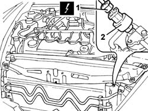

5040B20 LINEAR PRESSURE TRANSDUCER FOR AIR CONDITIONING SYSTEM - R.R.
- Path
- Procedures > 50 auxiliary units > 5040 AIR CONDITIONING CASING AND COMPONENTS > 5040B SAFETY SYSTEM CHECK DEVICES > 5040B20 LINEAR PRESSURE TRANSDUCER FOR AIR CONDITIONING SYSTEM - R.R.
- Kind
- repair procedure (removal / refitting; the operation number is the code)
- Applies to
- all engines; all production periods
- Interactive page
- https://sloeber94.github.io/elrnDB-lThss/en/#/79189
Applies to: all engines; all production periods
 Removing
Removing
 Refitting
Refitting- Open the boot and disconnect the negative battery terminal.
1. Disconnect the electrical connector for the air conditioning system linear pressure transducer.
 | Description | Connector |
|---|---|---|
1 | Linear sensor (for climate control) | K120 |
2. Undo and remove the air conditioning system linear pressure transducer.

Applies to: all engines; all production periods
Refitting
Removing- Tighten the air conditioning system linear pressure transducer.
- Connect the electrical connector.
- Connect the negative battery terminal.